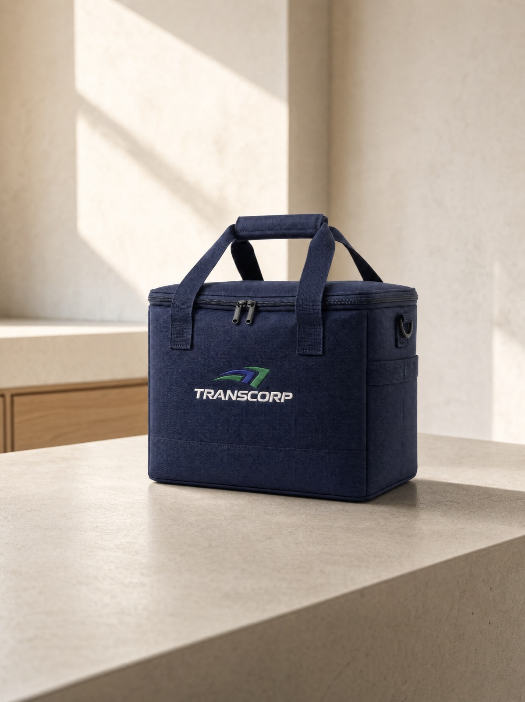

Enter your operator credentials to continue.
Operator access is provisioned by Transcorp.

rev 2, per Love: the live full-bleed split is kept — clean white form panel on the left, the real cooler-bag photo co-equal on the right, the real Transcorp logo lockup (no drawn box). White dominates; cream is only the thin frame and the navy spine. B+ identity comes from the Bricolage heading, the mono eyebrow, sentence-case labels (D2), and the single green primary action.
Unchanged: the email/password fields, the loginAction server action, the user.login_succeeded / user.login_failed audit events, the ?next= redirect, and the error/pending states. Pure brand-pass.